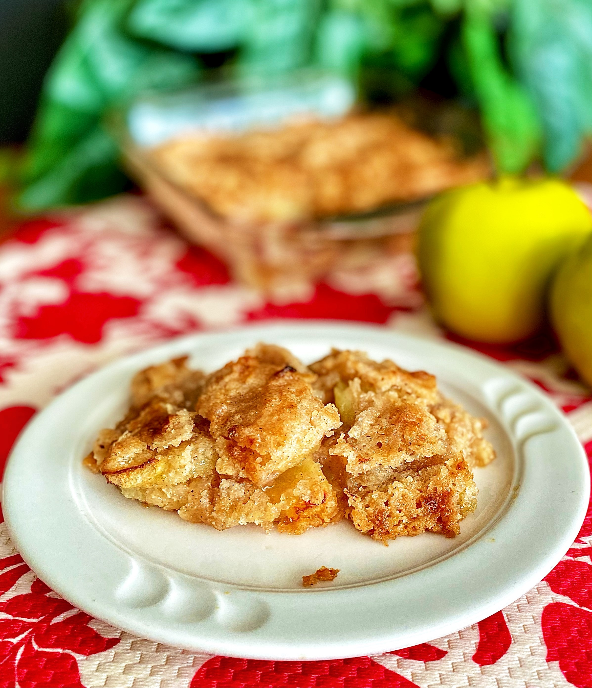

Crumble

This apple crumble recipe is easy to make with Granny Smith apples and a buttery crumb
This apple crumble recipe is the perfect way to welcome fall. Full of cozy autumnal flavors like cinnamon and nutmeg.
you'll want to make this apple crumble all season long !
Ingredients
- 4 cups sliced peeled Granny Smith apples
- 1 tablespoon water
- 1 teaspoon lemon juice
- 1 cup white sugar
- ¾ cup all-purpose flour
- ½ teaspoon ground cinnamon
- ¼ teaspoon ground nutmeg
- ¼ teaspoon salt
- ½ cup cold unsalted butter, cut into small pieces
Steps
- Preheat the oven to 375 degrees F (190 degrees C).
- Pile sliced apples in a casserole dish. Mix water and lemon juice together and sprinkle over apples.
- Combine sugar, flour, cinnamon, nutmeg, and salt in a mixing bowl. Mix well using an electric mixer. Add butter pieces and mix until mixture is crumbly; sprinkle evenly over apples.
- Bake in the preheated oven until bubbly and golden, about 45 minutes. Let cool slightly to thicken before serving in bowls.